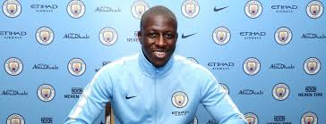

Nombre persona:
Dirección:
E-Mail:
1º Datos académicos
Estudiado grado superior en marketing y twitter en la universidad de la vida entre los años 2005 al 2012
Tiene educación infantil y educación primaria en el colegio en el colegio de de cuatro vientos.
2º Datos laborales
Jugó en el AS Mónaco, Olympique de Marsella y en el Le Havre
Juega actualmente en el manchester city a los cargos de Josep Guardiola